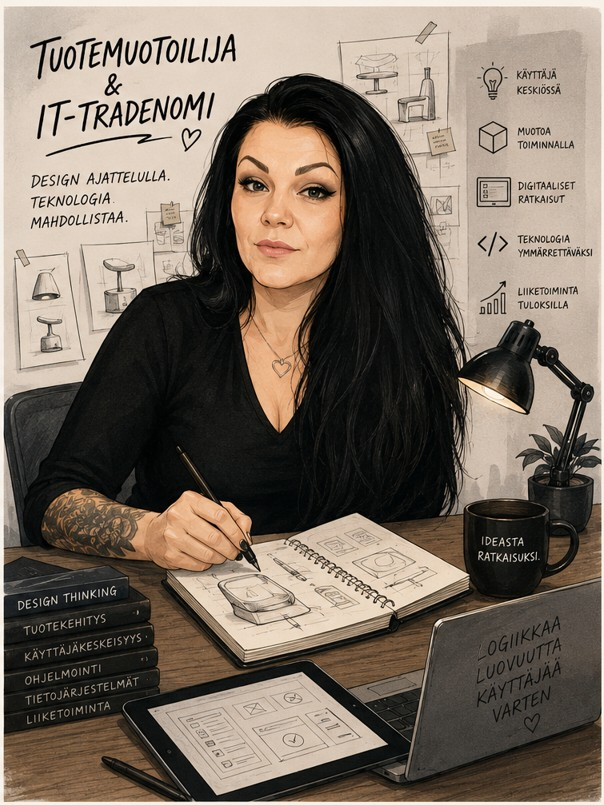

Olen pienestä pitäen ollut koulussa ns. "kympin tyttö" ja koulunkäynti
on ollut minulle verrattain helppoa. Hyvin numeroin suoriutuminen ei ole
vaatinut valtavaa määrää pänttäystä.
Peruskoulun läpäisin aikanaan yli 9 keskiarvolla ja siitä siirryin
opiskelemaan lukioon, josta kirjoitin ylioppilaaksi vuonna 2004.
Matematiikan Laudatur lienee arvosana, josta saa olla ylpeä.
Lukion jälkeen pääsin Hämeen Ammattikorkeakouluun lukemaan
Tuotemuotoilijaksi ja valmistuin sieltä vuonna 2011.
Työskenneltyäni pitkään erilaisissa suunnittelu- ja esimiestehtävissä,
päädyin tavoittelemaan alanvaihtoa saavuttaakseni laveammat
mahdollisuudet työmarkkinoilla.
Pääsin Laurea-Ammattikorkeakouluun lukemaan Digitaalisten palveluiden
kehittämistä. Tarkoitukseni on valmistua IT-tradenomiksi vuoden 2028
loppupuolella tai viimeistään 2029 keväällä. Sen jälkeen tavoitteenani
on hyvän työn ohella suorittaa YAMK-opinnot samalla alalla.